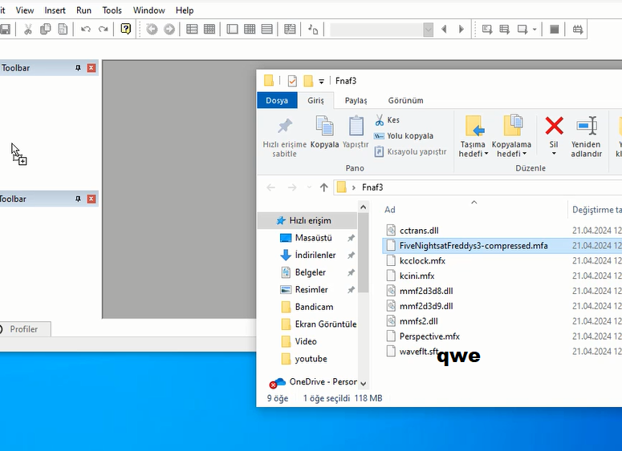

Merhaba arkadaşlar bu videoda sizinle fnafı nasıl modlayabileceğinizi göstereceğim
1- indirdiğimiz dosyaları rardan çıkartıyoruz
2- fnaf 3 klasörüne girip fnaf3'ü kuruyoruz
3- anaconda klasörüne girip python-2.7.18.amd64.msi dosyasını kuruyoruz
4- yüklendikten sonra anaconda.exe dosyasını açıyoruz
5- oyunun yerini ve nereye çıkarılacağını seçip başlatıyoruz
6- clickteam'ı açıyoruz ve oyunun mfa dosyasını atıyoruz

7- ve bitti şimdi istediğiniz gibi düzenleyebilirsiniz arkadaşlar